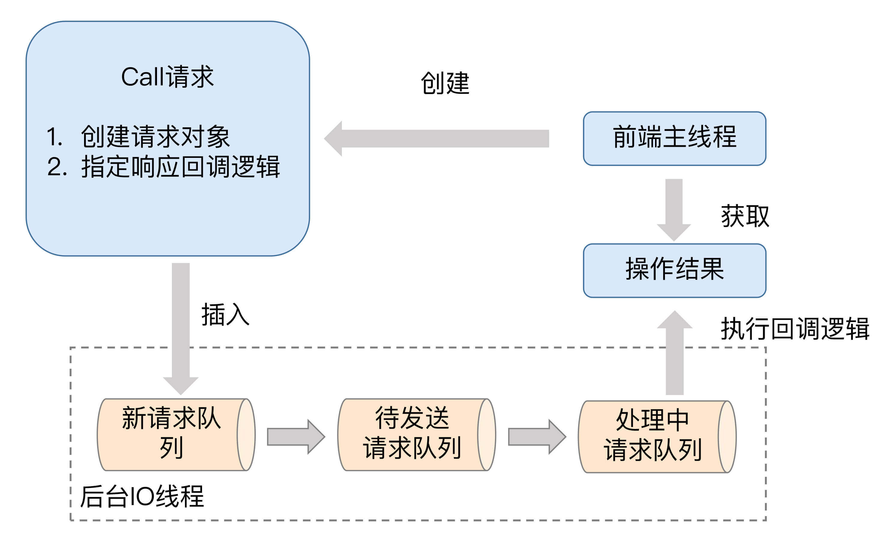
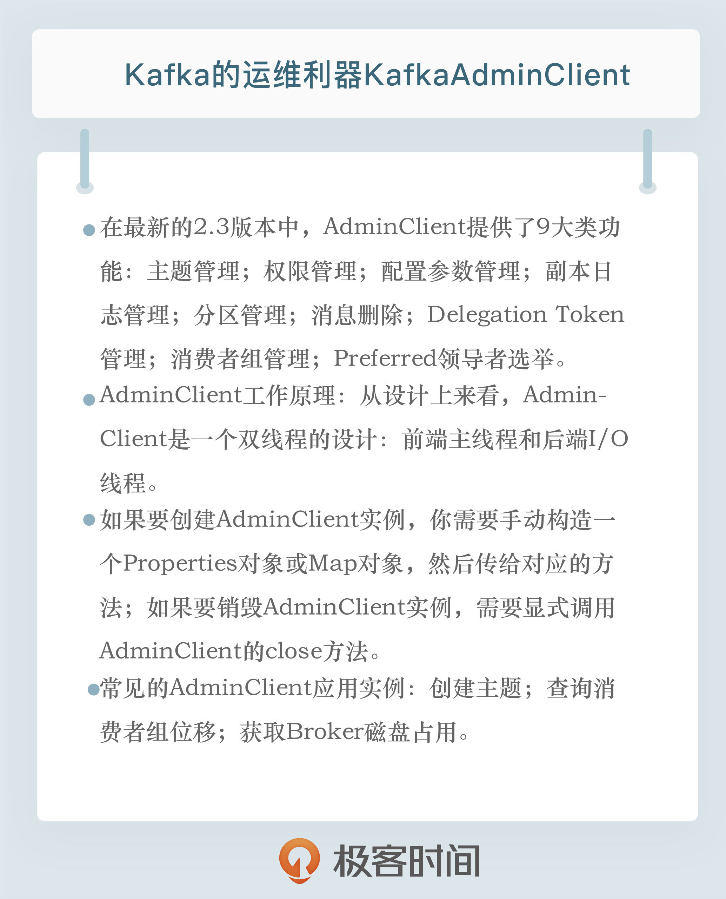

- 00 开篇词 为什么要学习Kafka？.md.html
- 01 消息引擎系统ABC.md.html
- 02 一篇文章带你快速搞定Kafka术语.md.html
- 03 Kafka只是消息引擎系统吗？.md.html
- 04 我应该选择哪种Kafka？.md.html
- 05 聊聊Kafka的版本号.md.html
- 06 Kafka线上集群部署方案怎么做？.md.html
- 07 最最最重要的集群参数配置（上）.md.html
- 08 最最最重要的集群参数配置（下）.md.html
- 09 生产者消息分区机制原理剖析.md.html
- 10 生产者压缩算法面面观.md.html
- 11 无消息丢失配置怎么实现？.md.html
- 12 客户端都有哪些不常见但是很高级的功能？.md.html
- 13 Java生产者是如何管理TCP连接的？.md.html
- 14 幂等生产者和事务生产者是一回事吗？.md.html
- 15 消费者组到底是什么？.md.html
- 16 揭开神秘的“位移主题”面纱.md.html
- 17 消费者组重平衡能避免吗？.md.html
- 18 Kafka中位移提交那些事儿.md.html
- 19 CommitFailedException异常怎么处理？.md.html
- 20 多线程开发消费者实例.md.html
- 21 Java 消费者是如何管理TCP连接的_.md.html
- 22 消费者组消费进度监控都怎么实现？.md.html
- 23 Kafka副本机制详解.md.html
- 24 请求是怎么被处理的？.md.html
- 25 消费者组重平衡全流程解析.md.html
- 26 你一定不能错过的Kafka控制器.md.html
- 27 关于高水位和Leader Epoch的讨论.md.html
- 28 主题管理知多少_.md.html
- 29 Kafka动态配置了解下？.md.html
- 30 怎么重设消费者组位移？.md.html
- 31 常见工具脚本大汇总.md.html
- 32 KafkaAdminClient：Kafka的运维利器.md.html
- 33 Kafka认证机制用哪家？.md.html
- 34 云环境下的授权该怎么做？.md.html
- 35 跨集群备份解决方案MirrorMaker.md.html
- 36 你应该怎么监控Kafka？.md.html
- 37 主流的Kafka监控框架.md.html
- 38 调优Kafka，你做到了吗？.md.html
- 39 从0搭建基于Kafka的企业级实时日志流处理平台.md.html
- 40 Kafka Streams与其他流处理平台的差异在哪里？.md.html
- 41 Kafka Streams DSL开发实例.md.html
- 42 Kafka Streams在金融领域的应用.md.html
- 加餐 搭建开发环境、阅读源码方法、经典学习资料大揭秘.md.html
- 用户故事 黄云：行百里者半九十.md.html
- 结束语 以梦为马，莫负韶华！.md.html
- 捐赠
32 KafkaAdminClient：Kafka的运维利器
你好，我是胡夕。今天我要和你分享的主题是：Kafka的运维利器KafkaAdminClient。
引入原因
在上一讲中，我向你介绍了Kafka自带的各种命令行脚本，这些脚本使用起来虽然方便，却有一些弊端。
首先，不论是Windows平台，还是Linux平台，命令行的脚本都只能运行在控制台上。如果你想要在应用程序、运维框架或是监控平台中集成它们，会非常得困难。
其次，这些命令行脚本很多都是通过连接ZooKeeper来提供服务的。目前，社区已经越来越不推荐任何工具直连ZooKeeper了，因为这会带来一些潜在的问题，比如这可能会绕过Kafka的安全设置。在专栏前面，我说过kafka-topics脚本连接ZooKeeper时，不会考虑Kafka设置的用户认证机制。也就是说，任何使用该脚本的用户，不论是否具有创建主题的权限，都能成功“跳过”权限检查，强行创建主题。这显然和Kafka运维人员配置权限的初衷背道而驰。
最后，运行这些脚本需要使用Kafka内部的类实现，也就是Kafka服务器端的代码。实际上，社区还是希望用户只使用Kafka客户端代码，通过现有的请求机制来运维管理集群。这样的话，所有运维操作都能纳入到统一的处理机制下，方便后面的功能演进。
基于这些原因，社区于0.11版本正式推出了Java客户端版的AdminClient，并不断地在后续的版本中对它进行完善。我粗略地计算了一下，有关AdminClient的优化和更新的各种提案，社区中有十几个之多，而且贯穿各个大的版本，足见社区对AdminClient的重视。
值得注意的是，服务器端也有一个AdminClient，包路径是kafka.admin。这是之前的老运维工具类，提供的功能也比较有限，社区已经不再推荐使用它了。所以，我们最好统一使用客户端的AdminClient。
如何使用？
下面，我们来看一下如何在应用程序中使用AdminClient。我们在前面说过，它是Java客户端提供的工具。想要使用它的话，你需要在你的工程中显式地增加依赖。我以最新的2.3版本为例来进行一下展示。
如果你使用的是Maven，需要增加以下依赖项：
<dependency>
<groupId>org.apache.kafka</groupId>
<artifactId>kafka-clients</artifactId>
<version>2.3.0</version>
</dependency>
如果你使用的是Gradle，那么添加方法如下：
compile group: 'org.apache.kafka', name: 'kafka-clients', version: '2.3.0'
功能
鉴于社区还在不断地完善AdminClient的功能，所以你需要时刻关注不同版本的发布说明（Release Notes），看看是否有新的运维操作被加入进来。在最新的2.3版本中，AdminClient提供的功能有9大类。
- 主题管理：包括主题的创建、删除和查询。
- 权限管理：包括具体权限的配置与删除。
- 配置参数管理：包括Kafka各种资源的参数设置、详情查询。所谓的Kafka资源，主要有Broker、主题、用户、Client-id等。
- 副本日志管理：包括副本底层日志路径的变更和详情查询。
- 分区管理：即创建额外的主题分区。
- 消息删除：即删除指定位移之前的分区消息。
- Delegation Token管理：包括Delegation Token的创建、更新、过期和详情查询。
- 消费者组管理：包括消费者组的查询、位移查询和删除。
- Preferred领导者选举：推选指定主题分区的Preferred Broker为领导者。
工作原理
在详细介绍AdminClient的主要功能之前，我们先简单了解一下AdminClient的工作原理。从设计上来看，AdminClient是一个双线程的设计：前端主线程和后端I/O线程。前端线程负责将用户要执行的操作转换成对应的请求，然后再将请求发送到后端I/O线程的队列中；而后端I/O线程从队列中读取相应的请求，然后发送到对应的Broker节点上，之后把执行结果保存起来，以便等待前端线程的获取。
值得一提的是，AdminClient在内部大量使用生产者-消费者模式将请求生成与处理解耦。我在下面这张图中大致描述了它的工作原理。

如图所示，前端主线程会创建名为Call的请求对象实例。该实例有两个主要的任务。
- 构建对应的请求对象。比如，如果要创建主题，那么就创建CreateTopicsRequest；如果是查询消费者组位移，就创建OffsetFetchRequest。
- 指定响应的回调逻辑。比如从Broker端接收到CreateTopicsResponse之后要执行的动作。一旦创建好Call实例，前端主线程会将其放入到新请求队列（New Call Queue）中，此时，前端主线程的任务就算完成了。它只需要等待结果返回即可。
剩下的所有事情就都是后端I/O线程的工作了。就像图中所展示的那样，该线程使用了3个队列来承载不同时期的请求对象，它们分别是新请求队列、待发送请求队列和处理中请求队列。为什么要使用3个呢？原因是目前新请求队列的线程安全是由Java的monitor锁来保证的。为了确保前端主线程不会因为monitor锁被阻塞，后端I/O线程会定期地将新请求队列中的所有Call实例全部搬移到待发送请求队列中进行处理。图中的待发送请求队列和处理中请求队列只由后端I/O线程处理，因此无需任何锁机制来保证线程安全。
当I/O线程在处理某个请求时，它会显式地将该请求保存在处理中请求队列。一旦处理完成，I/O线程会自动地调用Call对象中的回调逻辑完成最后的处理。把这些都做完之后，I/O线程会通知前端主线程说结果已经准备完毕，这样前端主线程能够及时获取到执行操作的结果。AdminClient是使用Java Object对象的wait和notify实现的这种通知机制。
严格来说，AdminClient并没有使用Java已有的队列去实现上面的请求队列，它是使用ArrayList和HashMap这样的简单容器类，再配以monitor锁来保证线程安全的。不过，鉴于它们充当的角色就是请求队列这样的主体，我还是坚持使用队列来指代它们了。
了解AdminClient工作原理的一个好处在于，它能够帮助我们有针对性地对调用AdminClient的程序进行调试。
我们刚刚提到的后端I/O线程其实是有名字的，名字的前缀是kafka-admin-client-thread。有时候我们会发现，AdminClient程序貌似在正常工作，但执行的操作没有返回结果，或者hang住了，现在你应该知道这可能是因为I/O线程出现问题导致的。如果你碰到了类似的问题，不妨使用jstack命令去查看一下你的AdminClient程序，确认下I/O线程是否在正常工作。
这可不是我杜撰出来的好处，实际上，这是实实在在的社区bug。出现这个问题的根本原因，就是I/O线程未捕获某些异常导致意外“挂”掉。由于AdminClient是双线程的设计，前端主线程不受任何影响，依然可以正常接收用户发送的命令请求，但此时程序已经不能正常工作了。
构造和销毁AdminClient实例
如果你正确地引入了kafka-clients依赖，那么你应该可以在编写Java程序时看到AdminClient对象。切记它的完整类路径是org.apache.kafka.clients.admin.AdminClient，而不是kafka.admin.AdminClient。后者就是我们刚才说的服务器端的AdminClient，它已经不被推荐使用了。
创建AdminClient实例和创建KafkaProducer或KafkaConsumer实例的方法是类似的，你需要手动构造一个Properties对象或Map对象，然后传给对应的方法。社区专门为AdminClient提供了几十个专属参数，最常见而且必须要指定的参数，是我们熟知的bootstrap.servers参数。如果你想了解完整的参数列表，可以去官网查询一下。如果要销毁AdminClient实例，需要显式调用AdminClient的close方法。
你可以简单使用下面的代码同时实现AdminClient实例的创建与销毁。
Properties props = new Properties();
props.put(AdminClientConfig.BOOTSTRAP_SERVERS_CONFIG, "kafka-host:port");
props.put("request.timeout.ms", 600000);
try (AdminClient client = AdminClient.create(props)) {
// 执行你要做的操作……
}
这段代码使用Java 7的try-with-resource语法特性创建了AdminClient实例，并在使用之后自动关闭。你可以在try代码块中加入你想要执行的操作逻辑。
常见的AdminClient应用实例
讲完了AdminClient的工作原理和构造方法，接下来，我举几个实际的代码程序来说明一下如何应用它。这几个例子，都是我们最常见的。
创建主题
首先，我们来看看如何创建主题，代码如下：
String newTopicName = "test-topic";
try (AdminClient client = AdminClient.create(props)) {
NewTopic newTopic = new NewTopic(newTopicName, 10, (short) 3);
CreateTopicsResult result = client.createTopics(Arrays.asList(newTopic));
result.all().get(10, TimeUnit.SECONDS);
}
这段代码调用AdminClient的createTopics方法创建对应的主题。构造主题的类是NewTopic类，它接收主题名称、分区数和副本数三个字段。
注意这段代码倒数第二行获取结果的方法。目前，AdminClient各个方法的返回类型都是名为***Result的对象。这类对象会将结果以Java Future的形式封装起来。如果要获取运行结果，你需要调用相应的方法来获取对应的Future对象，然后再调用相应的get方法来取得执行结果。
当然，对于创建主题而言，一旦主题被成功创建，任务也就完成了，它返回的结果也就不重要了，只要没有抛出异常就行。
查询消费者组位移
接下来，我来演示一下如何查询指定消费者组的位移信息，代码如下：
String groupID = "test-group";
try (AdminClient client = AdminClient.create(props)) {
ListConsumerGroupOffsetsResult result = client.listConsumerGroupOffsets(groupID);
Map<TopicPartition, OffsetAndMetadata> offsets =
result.partitionsToOffsetAndMetadata().get(10, TimeUnit.SECONDS);
System.out.println(offsets);
}
和创建主题的风格一样，我们调用AdminClient的listConsumerGroupOffsets方法去获取指定消费者组的位移数据。
不过，对于这次返回的结果，我们不能再丢弃不管了，因为它返回的Map对象中保存着按照分区分组的位移数据。你可以调用OffsetAndMetadata对象的offset()方法拿到实际的位移数据。
获取Broker磁盘占用
现在，我们来使用AdminClient实现一个稍微高级一点的功能：获取某台Broker上Kafka主题占用的磁盘空间量。有些遗憾的是，目前Kafka的JMX监控指标没有提供这样的功能，而磁盘占用这件事，是很多Kafka运维人员要实时监控并且极为重视的。
幸运的是，我们可以使用AdminClient来实现这一功能。代码如下：
try (AdminClient client = AdminClient.create(props)) {
DescribeLogDirsResult ret = client.describeLogDirs(Collections.singletonList(targetBrokerId)); // 指定Broker id
long size = 0L;
for (Map<String, DescribeLogDirsResponse.LogDirInfo> logDirInfoMap : ret.all().get().values()) {
size += logDirInfoMap.values().stream().map(logDirInfo -> logDirInfo.replicaInfos).flatMap(
topicPartitionReplicaInfoMap ->
topicPartitionReplicaInfoMap.values().stream().map(replicaInfo -> replicaInfo.size))
.mapToLong(Long::longValue).sum();
}
System.out.println(size);
}
这段代码的主要思想是，使用AdminClient的describeLogDirs方法获取指定Broker上所有分区主题的日志路径信息，然后把它们累积在一起，得出总的磁盘占用量。
小结
好了，我们来小结一下。社区于0.11版本正式推出了Java客户端版的AdminClient工具，该工具提供了几十种运维操作，而且它还在不断地演进着。如果可以的话，你最好统一使用AdminClient来执行各种Kafka集群管理操作，摒弃掉连接ZooKeeper的那些工具。另外，我建议你时刻关注该工具的功能完善情况，毕竟，目前社区对AdminClient的变更频率很高。

开放讨论
请思考一下，如果我们要使用AdminClient去增加某个主题的分区，代码应该怎么写？请给出主体代码。
欢迎写下你的思考和答案，我们一起讨论。如果你觉得有所收获，也欢迎把文章分享给你的朋友。
© 2019 - 2023 Liangliang Lee. Powered by gin and hexo-theme-book.